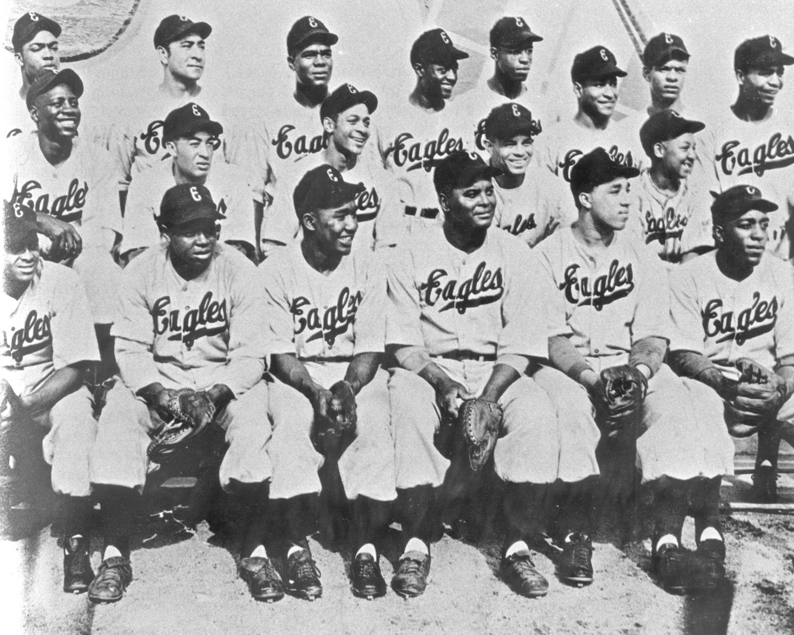
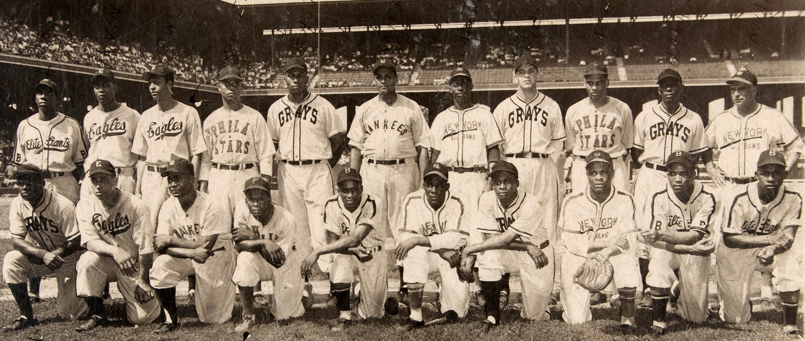
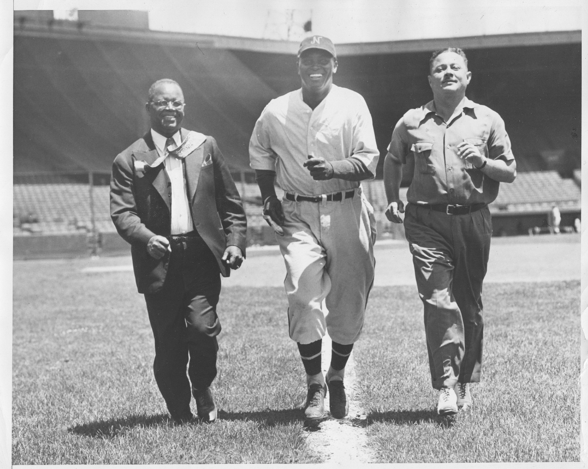
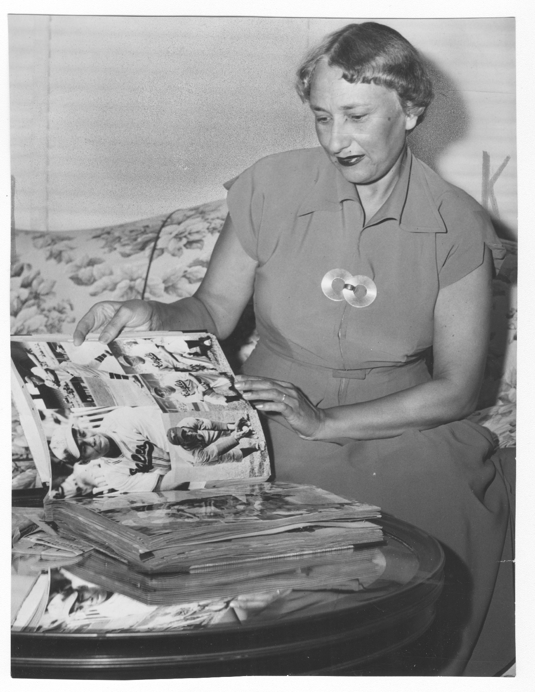

They won the championship in 1946 and drew 120,000 fans. By 1951 they were gone. This is the chart of what happened to all of them.
They won the championship in 1946 and drew 120,000 fans. They had Larry Doby, Monte Irvin, Don Newcombe, Leon Day, Biz Mackey, and Willie Wells. The Manleys posted a $25,000 profit. The franchise was thriving.
By 1947, attendance had dropped to 57,000. By 1948, the Manleys had lost fifty thousand dollars and sold the team. By 1949, the Eagles were in Houston. By 1951, they were gone. Five years, championship to nothing.
The Newark Eagles are not an outlier. They are the pattern. Between 1947 and 1955, almost every Negro Leagues franchise collapsed. Not because the game failed. Because the major leagues took the players without paying for the teams that built them, the fans followed the players, and the gate receipts that had sustained fifty years of Black baseball disappeared. This is the chart of what happened to all of them.

Every documented Negro Leagues franchise from 1920 to 1962. The bars are color-coded by cause of death. The cluster of red between 1947 and 1955 is the argument.

Championship to dissolution in five years. The documented numbers tell the entire story of the collapse in microcosm. Every figure below is sourced.


Every documented player signing from a Negro Leagues team to an MLB team, 1945 to 1955. The compensation column is the argument. Where a figure is undocumented, it is marked as such. The gaps are part of the record.
| Year | Player | From | To | Compensation |
|---|
The Negro Leagues did not die of natural causes. Three documented forces dismantled them. Each force fed the next. The mechanism is specific, documented, and named.
The Collapse is built on franchise records, compensation documentation, and contemporaneous press coverage. Every claim traces to a named source. Every gap is acknowledged.